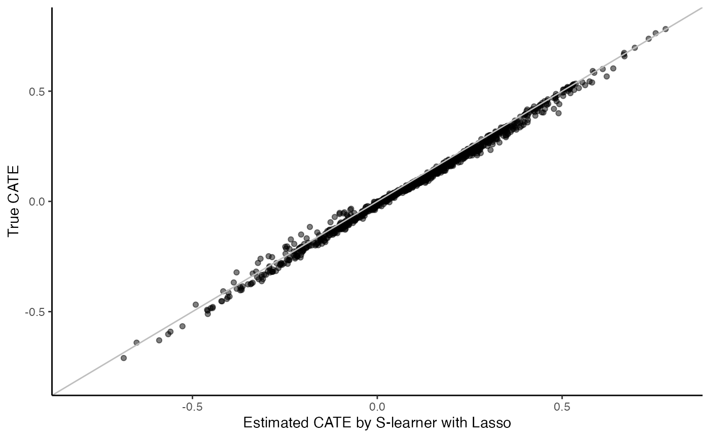
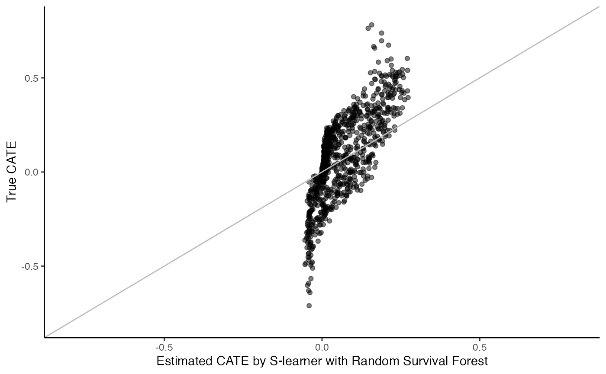
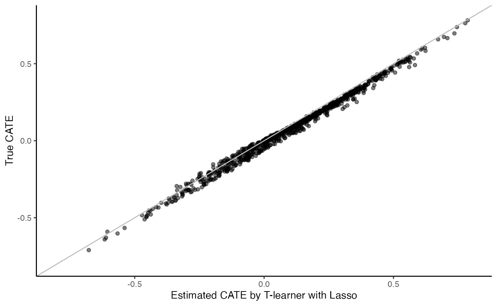
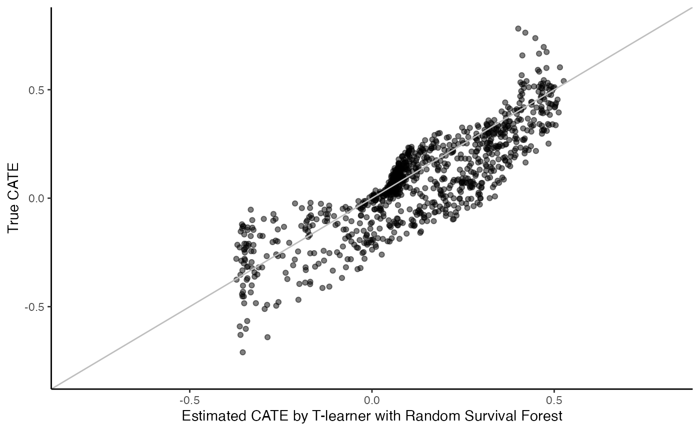
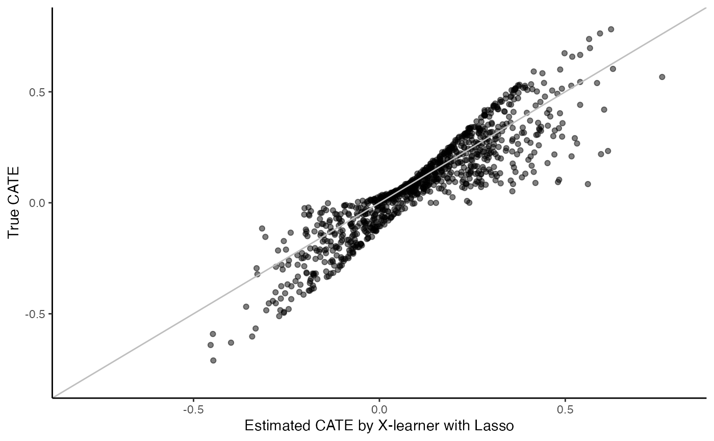
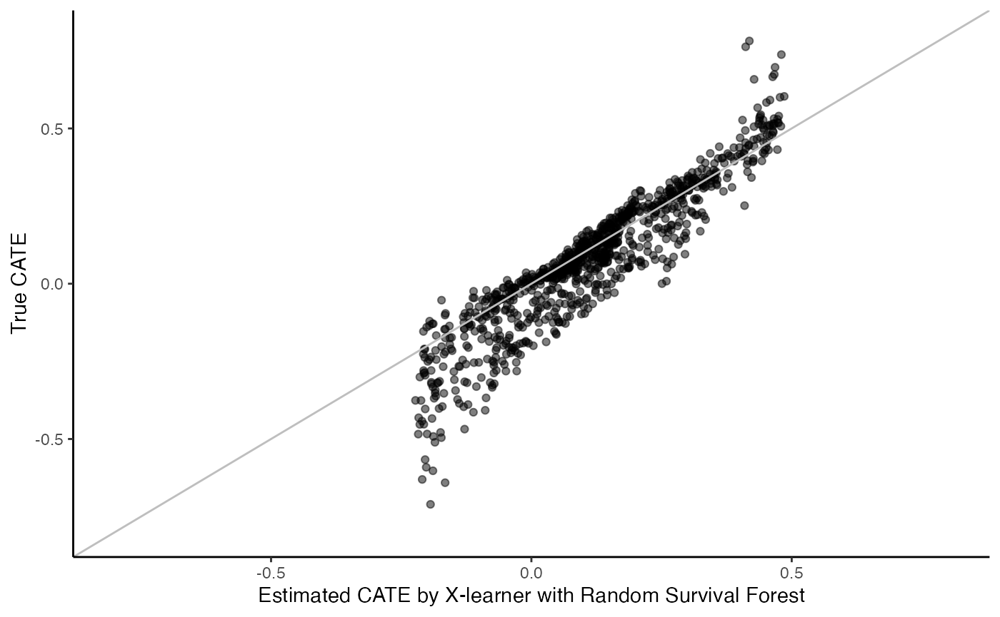
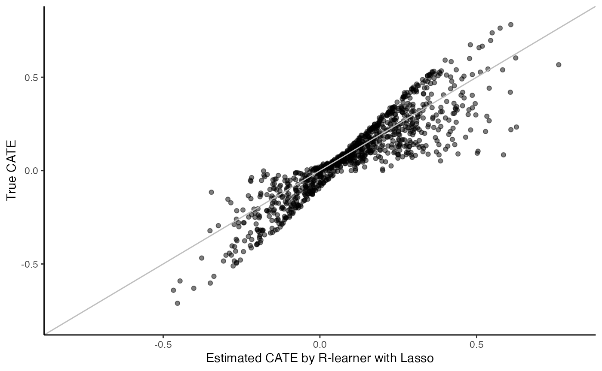
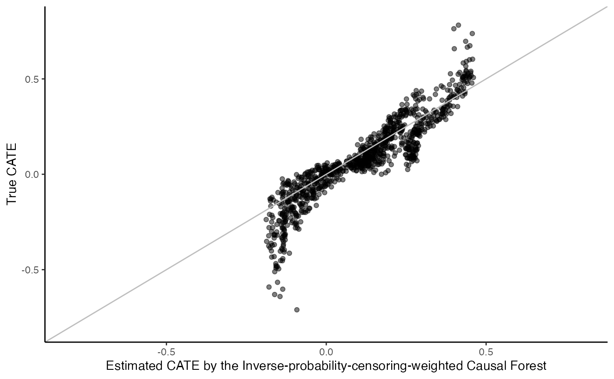

metalearners.RmdThis vignette provides a tutorial on how to estimate heterogeneous treatment effects for survival outcomes using the five popular metalearners (S-, T-, X-, R, and M-learners) available in the R package survlearners. Metalearners are specific meta-algorithms that leverage predictive models to solve the causal task of treatment effect estimation. For all metalearners, we consider two popular machine learning methods, Lasso (Tibshirani 1997; Goeman 2010) and random (survival) forest (Breiman 2001; Ishwaran et al. 2008; Athey, Tibshirani, and Wager 2019), for developing predictive models. Moreover, while the metaleaners have been developed for uncensored continuous or binary data, we explain how they are adapted in survlearners to the the survival setting through inverse probability of censoring weighting. For a detailed tutorial of these metalearners with mathematical underpinning, as well as a benchmarking study via a comprehensive simulation study, please refer to the Chapter named Treatment heterogeneity for survival outcomes in the Handbook of Matching and Weighting Adjustments for Causal Inference. In this tutorial is, we will first describe the problem set up then demonstrate the usage of each metalearners through simulation examples.
We discuss the problem of conditional average treatment effect (CATE) estimation under the potential outcome framework in causal inference (Neyman 1923; Rubin 1974). Consider a randomized controlled trial that provides \(N\) independent and identically distributed subject-level data, indexed by \(i \in \mathcal{I} = \{1, 2, \dotsc, N\}\). Patient baseline covariates are denoted by \(X_i = (X_{i1},\dotsc,X_{id}) \in \mathbb{R}^d\) and the treatment variable is \(W_i \in \{0,1\}\). Let \(T_i(w)\) be the potential survival time if subject \(i\) had been assigned the treatment \(w\) and \(C_i\) be the censoring time. Then, \(T_i = W_i T_i(1)+ (1-W_i)T_i(0)\), and the observed follow-up time is \(U_i=\mathrm{min}(T_i, C_i)\) with the corresponding non-censoring indicator \(\Delta_i = \mathbb{1}\{T_i \leq C_i\}\). Our observed dataset is \(\mathcal{O} = \{(X_i, W_i, U_i, \Delta_i): i \in \mathcal{I}\}\). We also reserve the notation \(\mathcal{I}_0 = \{ i \in \mathcal{I}: W_i=0\}\) for the index set of control units and \(\mathcal{O}_0 = \{(X_i, 0, U_i, \Delta_i): i \in \mathcal{I}_0\}\) for the control dataset. We define \(\mathcal{I}_1\) and \(\mathcal{O}_1\) analogously for the treated units.
The Conditional Average Treatment Effect (CATE) for the probability of survival beyond a pre-specified time \(t_0\) is:
\[\tau(x) = \mathbb{E}[Y_i(1)-Y_i(0) \mid X_i=x],\] where \(Y_i(w) = \mathbb{1}\{T_i(w) > t_0\}\) is the indicator of survival beyond time \(t_0\). We also write \(Y_i = Y_i(W_i)\).
To ensure the CATE is identifiable, we make the following assumptions (Rosenbaum and Rubin 1983):
Consistency: The observed survival time in real data is almost always the same as the potential outcome under the actual treatment assignment, i.e., \(T_i=T_i(W_i)\).
Randomized controlled trial (RCT): The treatment assignment is randomized and such that \(W_i\) is independent of \((X_i, T_i(1), T_i(0))\), i.e., \(W_i \perp \!\!\! \perp (X_i, T_i(1), T_i(0))\) and \(\mathbb P[W_i=1] = e\) with known \(0<e<1\).
Noninformative censoring: Censoring is independent of survival time conditional on treatment assignment and covariates, i.e., \(C_i \perp \!\!\! \perp T_i\,\mid\,X_i, W_i\).
Positivity: There exists subjects who are at risk beyond the time horizon \(t_0\), i.e., \(\mathbb{P}[C_i > t_0\,\mid\,X_i, W_i] \geq \eta_{C}\) for some \(\eta_{C}>0\).
To apply metalearners under observational studies, we replace the above RCT assumption by the following two assumptions:
Unconfoundedness: The potential survival times are independent of the treatment assignment \(W_i\) conditionally on baseline covariates, that is, \(W_i \perp \!\!\! \perp (T_i(1), T_i(0)) | X_i\).
Overlap: There exists \(\eta \in (0,1)\) such that the propensity score \(e(x) = \mathbb P[W_i=1 |X_i=x]\) satisfies \(\eta \leq e(x) \leq 1-\eta\) for all \(x\) in the support of \(X_i\).
S-learner is the “simplest” metalearner used in practice where a single risk model is learned using any method as a function of baseline covariates \(X_i\) and the treatment variable \(W_i\), i.e., \[u([x, w]) = \mathbb{E}[Y_i|\,X_i=x, W_i=w],\] Then, S-learner applies the fitted model and estimates the CATE as the difference between the imputed responses of treated and untreated subjects, i.e., \[\hat{\tau}(x) = \hat{\mu}([x, 1]) - \hat{\mu}([x, 0]).\] Note that S-learner treats the treatment assignment \(W_i\) as “just another covariate” (Hill 2011; Hahn, Murray, and Carvalho 2020).
Data generating process: the survival time is drawn from a proportional hazard (PH) model as a function of covariates \(X_1\), \(X_2\), and treatment \(W\)
set.seed(123)
n <- 1000
p <- 5
Y.max <- 2
X <- matrix(rnorm(n * p), n, p)
W <- rbinom(n, 1, 0.5)
numeratorT <- -log(runif(n))
T <- (numeratorT / exp(X[ ,1] + (-0.5 - X[ ,2]) * W)) ^ 2
failure.time <- pmin(T, Y.max)
numeratorC <- -log(runif(n))
censor.time <- (numeratorC / (4 ^ 2)) ^ (1 / 2)
Y <- as.numeric(pmin(failure.time, censor.time))
D <- as.integer(failure.time <= censor.time)
n.test <- 1000
X.test <- matrix(rnorm(n.test * p), n.test, p)Generate the true CATE in the simulated test data
t0 <- 0.2
true.cate <- rep(NA, n)
for (i in 1:n) {
cox.ft0 <- (-log(runif(10000)) / exp(X.test[i,1] + (-0.5 - X.test[i,2]) * 0))^2
cox.ft1 <- (-log(runif(10000)) / exp(X.test[i,1] + (-0.5 - X.test[i,2]) * 1))^2
true.cate[i] <- mean(pmin(cox.ft1, Y.max) > t0) - mean(pmin(cox.ft0, Y.max) > t0)
}When \(\hat{\mu}\) is learned using a Lasso Cox PH model, implemented via the glmnet R package (Friedman et al. 2022), at the time of interest \(t_0=0.2\)
surv.sl.lasso.fit <- surv_sl_lasso(X, Y, W, D, t0)
cate <- predict(surv.sl.lasso.fit)
cate.test <- predict(surv.sl.lasso.fit, X.test)
# Plot the estimated CATE against true CATE
df <- data.frame(cate.test = cate.test, true.cate = true.cate)
ggplot(df, aes(x = cate.test, y = true.cate)) +
geom_point(alpha = 0.5) +
xlab("Estimated CATE by S-learner with Lasso") +
ylab("True CATE") +
xlim(c(-0.8, 0.8)) +
ylim(c(-0.8, 0.8)) +
geom_abline(intercept = 0, slope = 1, color = "grey") +
theme_classic()
When \(\hat{\mu}\) is learned using a random survival forest, implemented via the grf R package (Tibshirani et al. 2022)
t0 <- 0.2
surv.sl.grf.fit <- surv_sl_grf(X, Y, W, D, t0)
cate <- predict(surv.sl.grf.fit)
cate.test <- predict(surv.sl.grf.fit, X.test)
# Plot the estimated CATE against true CATE
df <- data.frame(cate.test = cate.test, true.cate = true.cate)
ggplot(df, aes(x = cate.test, y = true.cate)) +
geom_point(alpha = 0.5) +
xlab("Estimated CATE by S-learner with Random Survival Forest") +
ylab("True CATE") +
xlim(c(-0.8, 0.8)) +
ylim(c(-0.8, 0.8)) +
geom_abline(intercept = 0, slope = 1, color = "grey") +
theme_classic()
T-learner is another widely-used metalearner that fits two risk models as a function of baseline covariates \(X_i\), separately for treated and untreated subjects, i.e., \[u_{(w)}(x) = \mathbb{P}[T_i(w) > t_0|\,X_i=x],\] So, \(u_{(1)}(x)\) is trained using data only from treated subjects, while \(u_{(0)}(x)\) is fitted using data only from control subjects. T-learner then applies both fitted models and estimates the CATE as the difference between the imputed responses of treated and untreated subjects, i.e., \[\hat{\tau}(x) = \hat{\mu}_{(1)}(x) - \hat{\mu}_{(0)}(x).\] T-learner with Cox-Lasso:
surv.tl.lasso.fit <- surv_tl_lasso(X, Y, W, D, t0)
cate <- predict(surv.tl.lasso.fit)
cate.test <- predict(surv.tl.lasso.fit, X.test)
# Plot the estimated CATE against true CATE
df <- data.frame(cate.test = cate.test, true.cate = true.cate)
ggplot(df, aes(x = cate.test, y = true.cate)) +
geom_point(alpha = 0.5) +
xlab("Estimated CATE by T-learner with Lasso") +
ylab("True CATE") +
xlim(c(-0.8, 0.8)) +
ylim(c(-0.8, 0.8)) +
geom_abline(intercept = 0, slope = 1, color = "grey") +
theme_classic()
T-learner with random survival forest:
surv.tl.grf.fit <- surv_tl_grf(X, Y, W, D, t0)
cate <- predict(surv.tl.grf.fit)
cate.test <- predict(surv.tl.grf.fit, X.test)
# Plot the estimated CATE against true CATE
df <- data.frame(cate.test = cate.test, true.cate = true.cate)
ggplot(df, aes(x = cate.test, y = true.cate)) +
geom_point(alpha = 0.5) +
xlab("Estimated CATE by T-learner with Random Survival Forest") +
ylab("True CATE") +
xlim(c(-0.8, 0.8)) +
ylim(c(-0.8, 0.8)) +
geom_abline(intercept = 0, slope = 1, color = "grey") +
theme_classic()
S-learner estimates treatment heterogeneity through including treatment-covariate interactions into risk models, and T-learner estimates treatment heterogeneity by building stratified risk models by treatment. One advantage of these two metalearners is that the extension to survival outcomes is straightforward, that is, applying risk models that account for right censoring. The downsides are: 1) they both require sufficient numbers of treated and untreated subjects to ensure reliable risk models, 2) they do not directly estimate a CATE function; therefore, do not allow a direct regularization of the CATE function nor the incorporation of any known structure of the CATE function, 3) they may result in complicated CATE models due to complex risk functions, and 4) T-learner may suffer the regularization-induced bias due to the inconsistent basis functions between \(\hat{u}_{(1)}(x)\) and \(\hat{u}_{(0)}(x)\).
In order to directly learn the CATE function by predictive modeling of \(Y_i^{*}= Y_i(1) - Y_i(0)\) as a function of \(X_i\), we are facing two challenges: First, due to censoring we do not observe \(Y_i\) for the censored \(i\); instead we observe \((U_i, \Delta_i)\). Second, by the fundamental problem of causal inference, we observe at most one potential outcome (each \(i\) is either treated or not), namely \(Y_i = Y_i(W_i)\). It turns out however, M-, X-, and R-learners can handle the “missing data” issue and enable directly modeling of the CATE.
The “missing data” or “right censoring” issue can be handled using Inverse Probability Censoring Weights (IPCW) (Kohler, Máthé, and Pintér 2002; Van der Laan and Robins 2003). Specifically, We create a dataset with only cases, which are defined as subjects who had an event before \(t_0\) or finished the follow-up until \(t_0\) without developing an event, i.e., \(\mathcal{I}_{\text{comp}} = \{i \in \mathcal{I} : \Delta_i=1 \text{ or } U_i \geq t_0\}\) and \(\mathcal{O}_{\text{comp}} = \{(X_i, W_i, U_i, \Delta_i): i \in \mathcal{I}\}\). Next, we estimate the survival function of the censoring time as follows: \[ S^C(u, x, w) = \mathbb{P}[C_i \geq u \mid X_i=x, W_i=w]\] Based on \(\hat{S}^C(\cdot)\), we then re-weight every subject \(i \in \mathcal{I}_{\text{comp}}\) by \(\hat{K}_i\), an estimate of the inverse of the probability of not being censored, namely: \[\hat{K}_i = 1\Big/\hat{S}^C\left(\min\{U_i, t_0\}, X_i, W_i\right).\] The IPCW adjustment removes censoring bias, but it can be inefficient and unstable when the censoring rate is high in a study and a majority of the censoring events happened before \(t_0\). It also may be more sensitive to misspecification of the censoring model. In such cases, one can consider a doubly robust correction similar to the augmented inverse-propensity weighting estimator of Robins, Rotnitzky, and Zhao (1994). We do not dive into the details here and refer interested readers to Tsiatis (2006).
For each of the three learners (M, X, R), survlearners provide two options for estimating censoring weights, a Kaplan-Meier (KM) estimator or a random survival forest. The KM estimator is appropriate under completely independent censoring, i.e., \(C_i \perp \!\!\! \perp \{T_i, X_i, W_i\}\). Otherwise, a random survival forest should be used to model the dependence between \(C_i\) and the other variables. Besides, survlearners estimate \(\hat{K}_i\) out-of-bag (e.g., cross-fitting) to avoid overfitting (Chernozhukov et al. 2018).
If we hypothetically had access to the oracle scores \(Y_i^{*}\) that satisfy \(\mathbb E[Y_i^* \mid X_i=x] = \tau(x)\; \text{ or }\; \mathbb E[Y_i^* \mid X_i=x]\) for the uncensored samples \(i \in \mathcal{I}_{\text{comp}}\) and weights \(\hat{K}_i\), then we could estimate CATEs via weighted predictive modeling as \(\hat{\tau}(\cdot) = \mathcal{M}(Y^{*} \sim X; \; _{\text{comp}}, \hat{K})\), where \(\mathcal{M}\) symbolizes an arbitrary model. In the subsections below, we describe how each metalearner resolves this challenge that—even in the absence of censoring—the oracle scores \(Y_i^{*}\) are not available, due to the fundamental challenge of causal inference.
The modified outcome method (M-learner) (Signorovitch 2007; Tian et al. 2014; Athey and Imbens 2016) leverages the aforementioned insight with the following score based on the Horvitz and Thompson (1952) transformation / inverse propensity weighting (IPW): \[Y^{*,M}_i = Y_i\left(\frac{W_i}{e} - \frac{1-W_i}{1-e}\right),\;\;\; \mathbb E[Y^{*,M}_i \mid X_i=x] = \tau(x),\] Then, the M-learner proceeds as follows: \[\hat{\tau}(x)= \mathcal{M}(Y^{*,M} \sim X;\; \mathcal{O}_{\text{comp}}, \hat{K})\] M-learner with Cox-Lasso:
surv.fl.lasso.fit <- surv_fl_lasso(X, Y, W, D, t0, W.hat = 0.5)
cate <- predict(surv.fl.lasso.fit)
cate.test <- predict(surv.fl.lasso.fit, X.test)M-learner with random survival forest:
surv.fl.grf.fit <- surv_fl_grf(X, Y, W, D, t0, W.hat = 0.5)
cate <- predict(surv.fl.grf.fit)
cate.test <- predict(surv.fl.grf.fit, X.test)A downside of the M-learner is the high variance (e.g., when \(e \approx 0\), then the scores \(Y_{i}^{*,M}\) can blow up for treated units). In contrast, X- and R-learners that also directly estimate the CATE but with lower variance by including estimated risk models in the definition of the scores.
The X-learner (Künzel et al. 2019) constructs scores for treated and untreated subjects separately in a “crossing” fashion \[Y_i^{*,X,1} = Y_i(1) - \mu_{(0)}(X_i), \;\; Y_i^{*,X,0} = \mu_{(1)}(X_i) - Y_i(0), \] where \(\mu_{(w)}(x) = \mathbb E[Y_i(w) \mid X_i=x]\) is estimated in the first stage as in the T-learner. With \(\hat{\mu}_{(0)}(X_i)\) and \(Y_i^{*,X,1}\), in the second stage, X-learner estimates the CATE as \[\hat{\tau}_{(1)}(\cdot) = \mathcal{M}(Y - \hat{\mu}_{(0)}(X) \sim X;\; \mathcal{O}_1 \cap \mathcal{O}_{\text{comp}}, \hat{K}),\] Analogously, we can estimate \(\hat{\tau}_{(0)}(\cdot) = \mathcal{M}(\hat{\mu}_{(0)}(X) \sim X;\; \mathcal{O}_0 \cap \mathcal{O}_{\text{comp}}, \hat{K})\). In the last stage, the X-learner combines the two CATE estimates as follows: \[\hat{\tau}(x) = (1-e)\cdot\hat{\tau}_{(1)}(x) + e\cdot\hat{\tau}_{(0)}(x).\] The intuition here is that we should upweight \(\hat{\tau}_{(1)}(x)\) if there are fewer treated units, and \(\hat{\tau}_{(0)}(x)\) if there are more treated units.
X-learner with Cox-Lasso:
surv.xl.lasso.fit <- surv_xl_lasso(X, Y, W, D, t0, W.hat = 0.5)
cate <- predict(surv.xl.lasso.fit)
cate.test <- predict(surv.xl.lasso.fit, X.test)
# Plot the estimated CATE against true CATE
df <- data.frame(cate.test = cate.test, true.cate = true.cate)
ggplot(df, aes(x = cate.test, y = true.cate)) +
geom_point(alpha = 0.5) +
xlab("Estimated CATE by X-learner with Lasso") +
ylab("True CATE") +
xlim(c(-0.8, 0.8)) +
ylim(c(-0.8, 0.8)) +
geom_abline(intercept = 0, slope = 1, color = "grey") +
theme_classic()
X-learner with random survival forest:
surv.xl.grf.fit <- surv_xl_grf(X, Y, W, D, t0, W.hat = 0.5)
cate <- predict(surv.xl.grf.fit)
cate.test <- as.vector(predict(surv.xl.grf.fit, X.test))
# Plot the estimated CATE against true CATE
df <- data.frame(cate.test = cate.test, true.cate = true.cate)
ggplot(df, aes(x = cate.test, y = true.cate)) +
geom_point(alpha = 0.5) +
xlab("Estimated CATE by X-learner with Random Survival Forest") +
ylab("True CATE") +
xlim(c(-0.8, 0.8)) +
ylim(c(-0.8, 0.8)) +
geom_abline(intercept = 0, slope = 1, color = "grey") +
theme_classic()
X-learner with random survival forest and Lasso:
surv.xl.grf.lasso.fit <- surv_xl_grf_lasso(X, Y, W, D, t0, W.hat = 0.5)
cate <- predict(surv.xl.grf.lasso.fit)
cate.test <- predict(surv.xl.grf.lasso.fit, X.test)The R-learner (Nie and Wager 2021) is a metalearner that builds upon a characterization of the CATE in terms of residualization of \(W_i\) and \(Y_i\) (Robinson 1988), i.e., \(W_i - e\) and \(Y_i - m(x)\), where \(m(x) = \mathbb E[Y_i \mid X_i=x]\). There are two ways to describe the R-learner: the loss-based and the weighted representations.
For the loss-based representation (Robins 2004), R-learner estimates \(\tau(\cdot)\) by minimizing the following loss \[\tau(\cdot) \in \mathrm{argmin}_{\widetilde{\tau}(\cdot)} \left\{\mathbb{E}\left[\hat{K}_i\left(\{Y_i-\hat{m}(X_i)\}-\{W_i-e\}\widetilde{\tau}(X_i)\right)^2\right] \right\},\] where \(\hat{m}(\cdot) = e \hat{\mu}_{(1)}(\cdot) + (1-e)\hat{\mu}_{(0)}(\cdot)\) is the outcome nuisance parameter estimated out-of-bag. The \(\hat{\mu}_{(w)}(\cdot)\) is estimated as in the T-learner and \(\hat{K}_i\) are the estimated censoring weights as above.
To show the weighted representation, we rewrite the above loss function using a weighted least squares objective as: \[\tau(\cdot) \in \mathrm{argmin}_{\widetilde{\tau}(\cdot)} \left\{\mathbb{E}\left[\hat{K}_i(W_i-e)^2\left(\frac{Y_i-\hat{m}(X_i)}{W_i-e}-\widetilde{\tau}(X_i)\right)^2\right] \right\}, \] where \(Y^{*, R} = \frac{Y_i-\hat{m}(X_i)}{W_i-e}\) is the constructed score by the R-learner.
We point out several remarks about R-learner:
R-learner is robust to a biased estimation of the outcome nuisance parameter, i.e., even if \(\hat{m}(.)\) is not a good approximation to \(m(\cdot)\), the R-learner may perform well (Nie and Wager 2021). In fact, if \(e = 0.5\) and we estimate \(\hat{m}(\cdot) \approx 0\) (even though \(m(\cdot) \neq 0\)), the R-learner predictions are very similar to the predictions of the M-learner. On the other hand, when \(\hat{m}(\cdot) \approx m(\cdot)\), then centering by \(\hat{m}(X_i)\) helps stabilize the estimation compared to the M-learner.
For the weighted least squares objective with weights \((W_i-e)^2\), under unbalanced treatment assignment, e.g., when there are less treated units (\(e < 0.5\)), then the R-learner upweights the treated units compared to control units by the factor \((1-e)^2/e^2\). The upweighting of treated units by the R-learner is similar to the behaviour of the X-learner (shown above). In fact, the predictions of R-learner and X-learner (when used with the same predictive models) are almost identical in the case of strong imbalance \((e \approx 0)\) (Nie and Wager 2021).
When R-learner is implemented with the generalized random forest framework of Athey, Tibshirani, and Wager (2019), there exists a function causal_forest from the grf package that enables direct modeling of \(\tau(x)\). For each \(x\), the causal forest estimates \(\hat{\tau}(x)\) by fitting a weighted regression using the loss-based objective and with additional data-adaptive weighting localized around \(x\) and determined by the collection of tree splits (Athey, Tibshirani, and Wager 2019). To adapt it for survival outcomes, we extract the complete cases and apply the censoring weights \(\hat{K}_i\) through the sample.weights option.
Causal Survival Forest (CSF) of Cui et al. (2022) is a special case of R-learner that handles right censoring using a doubly robust censoring adjustment mentioned above.
Both objectives shown above can be fitted with standard software with different transformations of the outcome and covariates. The implementation in survlearners utilizes the weighted objective.
R-learner with Cox-Lasso:
surv.rl.lasso.fit <- surv_rl_lasso(X, Y, W, D, t0, W.hat = 0.5)
cate <- predict(surv.rl.lasso.fit)
cate.test <- predict(surv.rl.lasso.fit, X.test)
# Plot the estimated CATE against true CATE
df <- data.frame(cate.test = cate.test, true.cate = true.cate)
ggplot(df, aes(x = cate.test, y = true.cate)) +
geom_point(alpha = 0.5) +
xlab("Estimated CATE by R-learner with Lasso") +
ylab("True CATE") +
xlim(c(-0.8, 0.8)) +
ylim(c(-0.8, 0.8)) +
geom_abline(intercept = 0, slope = 1, color = "grey") +
theme_classic()
R-learner with random survival forest (causal_forest):
surv.rl.grf.fit <- surv_rl_grf(X, Y, W, D, t0, W.hat = 0.5)
cate <- predict(surv.rl.grf.fit)
cate.test <- predict(surv.rl.grf.fit, X.test)
# Plot the estimated CATE against true CATE
df <- data.frame(cate.test = cate.test, true.cate = true.cate)
ggplot(df, aes(x = cate.test, y = true.cate)) +
geom_point(alpha = 0.5) +
xlab("Estimated CATE by the Inverse-probability-censoring-weighted Causal Forest") +
ylab("True CATE") +
xlim(c(-0.8, 0.8)) +
ylim(c(-0.8, 0.8)) +
geom_abline(intercept = 0, slope = 1, color = "grey") +
theme_classic()
R-learner with random survival forest and Lasso:
surv.rl.grf.lasso.fit <- surv_rl_grf_lasso(X, Y, W, D, t0, W.hat = 0.5, cen.fit = "survival.forest")
cate <- predict(surv.rl.grf.lasso.fit)
cate.test <- predict(surv.rl.grf.lasso.fit, X.test)Hopefully, at this point, we are clear about the main ideas of the five metalearners and how to implement them for survival outcomes via the survlearners package. Given all these advanced statistical tools for estimating treatment heterogeneity, it is crucial to know when to apply each approach in light of the specific characteristics of a dataset. For interested readers, please refer to the Metalearners selection tutorial for an overview of our benchmarking study of these metalearners under various data generating processes and a set of practical recommendations and considerations when choosing a CATE estimation approach in applied research.
This work was supported by R01 HL144555 from the National Heart, Lung, and Blood Institute (NHLBI).
Athey, Susan, and Guido Imbens. 2016. “Recursive Partitioning for Heterogeneous Causal Effects: Table 1.” Proceedings of the National Academy of Sciences 113 (July): 7353–60.
Athey, Susan, Julie Tibshirani, and Stefan Wager. 2019. “Generalized Random Forests.” The Annals of Statistics 47 (2): 1148–78.
Breiman, L. 2001. “Random Forests.” Machine Learning, 45: 5–32.
Chernozhukov, Victor, Denis Chetverikov, Mert Demirer, Esther Duflo, Christian Hansen, Whitney Newey, and James Robins. 2018. “Double/debiased machine learning for treatment and structural parameters.” The Econometrics Journal 21 (1): C1–C68.
Cui, Yifan, Michael R Kosorok, Erik Sverdrup, Stefan Wager, and Ruoqing Zhu. 2022. “Estimating Heterogeneous Treatment Effects with Right-Censored Data via Causal Survival Forests.” arXiv Preprint arXiv:2001.09887.
Friedman, Jerome, Trevor Hastie, Rob Tibshirani, Balasubramanian Narasimhan, Kenneth Tay, Noah Simon, Junyang Qian, and James Yang. 2022. Glmnet: Lasso and Elastic-Net Regularized Generalized Linear Models. https://glmnet.stanford.edu.
Goeman, Jelle J. 2010. “\(L_1\) Penalized Estimation in the Cox Proportional Hazards Model.” Biometrical Journal 52 (1): 70–84.
Hahn, P Richard, Jared S Murray, and Carlos M Carvalho. 2020. “Bayesian Regression Tree Models for Causal Inference: Regularization, Confounding, and Heterogeneous Effects (with Discussion).” Bayesian Analysis 15 (3): 965–1056.
Hill, JL. 2011. “Bayesian Nonparametric Modeling for Causal Inference.” Journal of Computational and Graphical Statistics 20 (1): 217–40.
Horvitz, Daniel G, and Donovan J Thompson. 1952. “A Generalization of Sampling Without Replacement from a Finite Universe.” Journal of the American Statistical Association 47 (260): 663–85.
Ishwaran, Hemant, Udaya B Kogalur, Eugene H Blackstone, and Michael S Lauer. 2008. “Random Survival Forests.” The Annals of Applied Statistics 2 (3): 841–60.
Kohler, Michael, Kinga Máthé, and Márta Pintér. 2002. “Prediction from Randomly Right Censored Data.” Journal of Multivariate Analysis 80 (1): 73–100.
Künzel, Sören R, Jasjeet S Sekhon, Peter J Bickel, and Bin Yu. 2019. “Metalearners for Estimating Heterogeneous Treatment Effects Using Machine Learning.” Proceedings of the National Academy of Sciences 116 (10): 4156–65.
Neyman, J. 1923. “Sur Les Applications de La Th’eorie Des Probabilit’es Aux Experiences Agricoles: Essai Des Principes.” Roczniki Nauk Rolniczych 10 (January).
Nie, Xinkun, and Stefan Wager. 2021. “Quasi-Oracle Estimation of Heterogeneous Treatment Effects.” Biometrika 108 (2): 299–319.
Robins, James M. 2004. “Optimal Structural Nested Models for Optimal Sequential Decisions.” In Proceedings of the Second Seattle Symposium in Biostatistics, 189–326. Springer.
Robins, James, A G Rotnitzky, and Lue Zhao. 1994. “Estimation of Regression Coefficients When Some Regressors Are Not Always Observed.” Journal of the American Statistical Association 89 (September): 846–66.
Robinson, Peter. 1988. “Root-\(N\)-Consistent Semiparametric Regression.” Econometrica 56 (February): 931–54.
Rosenbaum, Paul, and Donald Rubin. 1983. “The Central Role of the Propensity Score in Observational Studies for Causal Effects.” Biometrika 70 (April): 41–55.
Rubin, Donald B. 1974. “Estimating Causal Effects of Treatments in Randomized and Nonrandomized Studies.” Journal of Educational Psychology 66 (5): 688.
Signorovitch, James. 2007. “Identifying Informative Biological Markers in High-Dimensional Genomic Data and Clinical Trials.” PhD thesis, Harvard University.
Tian, Lu, Ash Alizadeh, Andrew Gentles, and Robert Tibshirani. 2014. “A Simple Method for Estimating Interactions Between a Treatment and a Large Number of Covariates.” Journal of the American Statistical Association 109.
Tibshirani, Julie, Susan Athey, Erik Sverdrup, and Stefan Wager. 2022. Grf: Generalized Random Forests. https://github.com/grf-labs/grf.
Tibshirani, Robert. 1997. “The Lasso Method for Variable Selection in the Cox Model.” Statistics in Medicine 16 (4): 385–95.
Tsiatis, Anastasios A. 2006. “Semiparametric Theory and Missing Data.”
Van der Laan, Mark J, and James M Robins. 2003. Unified Methods for Censored Longitudinal Data and Causality. Vol. 5. Springer.